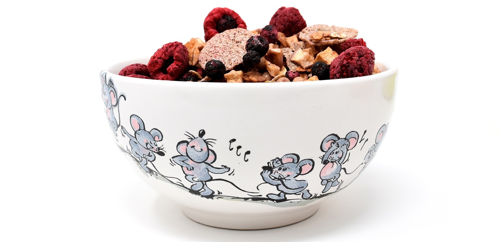

Η σωστή διατροφή στα παιδιά που ξεκινούν Σούμο δεν είναι απλώς θέμα “να φάνε πριν την προπόνηση”. Είναι ολοκληρωμένη στήριξη της ανάπτυξης, της ενέργειας και της ψυχολογικής ισορροπίας. Στην ηλικία 4–10 ετών, τα παιδιά αναπτύσσουν μυική μάζα, οστά και γνωστικές δεξιότητες, γι’ αυτό η διατροφή τους πρέπει να υποστηρίζει την προπόνηση, τη συγκέντρωση, την ενέργεια για παιχνίδι και την ψυχολογική ισορροπία.
Η παιδική παχυσαρκία αποτελεί σημαντικό πρόβλημα δημόσιας υγείας στην Ελλάδα. Σύμφωνα με τις πιο πρόσφατες μετρήσεις, περίπου 37,5% των παιδιών και εφήβων ηλικίας 2–14 ετών στην Ελλάδα είναι υπέρβαρα ή παχύσαρκα. Πηγή
Τα στοιχεία δείχνουν πως 1 στα 3 παιδιά στη χώρα μας αντιμετωπίζει υπερβολικό βάρος, με ιδιαίτερα αυξημένα ποσοστά στην προσχολική (περίπου 13,6% στα 0–5 έτη) και σχολική ηλικία (43% στα 5–7 έτη). Πηγή
Παράλληλα, ανεξάρτητες μετρήσεις δείχνουν ότι η Ελλάδα εμφανίζει από τις υψηλότερες αναλογίες υπέρβαρων ή παχύσαρκων παιδιών στην ηλικιακή ομάδα 5–9 ετών στην Ευρώπη, με ποσοστό που προσεγγίζει ή υπερβαίνει το 40% στις μετρήσεις του Παγκόσμιου Οργανισμού Υγείας και της UNICEF. Πηγή
Αυτά τα δεδομένα υπογραμμίζουν την ανάγκη για έγκαιρη πρόληψη μέσω σωστής διατροφής, επαρκούς σωματικής δραστηριότητας και εκπαίδευσης των παιδιών σε υγιεινές συνήθειες από μικρή ηλικία — στοιχεία που συνδέονται άμεσα με την επιτυχία σε αθλήματα όπως το Σούμο και γενικότερα με την καλή σωματική και ψυχολογική ανάπτυξη των παιδιών.
Το πρωινό είναι το πιο σημαντικό γεύμα πριν από την προπόνηση ή το παιχνίδι.
Σημαντικό: Το πρωινό πρέπει να καταναλώνεται 1–2 ώρες πριν την προπόνηση, ώστε να υπάρχει αρκετός χρόνος πέψης και σταθερή ενέργεια.
Η σωστή διατροφή επηρεάζει:
| Γεύμα | Τροφές | Σημαντικά |
|---|---|---|
| Πρωινό | Γκρανόλα χωρίς ζάχαρη ή βρώμη χωρίς ζάχαρη με κατσικίσιο γάλα, φρούτα εποχής | Σταθερή ενέργεια, βιταμίνες |
| Σνακ 1 ώρα πριν προπόνηση | Μπανάνα ή γιαούρτι πλήρες με φρούτα (σταφίδες, goji berries, cranberries), ψωμί ολικής άλεσης με μέλι | Σταθερή ενέργεια, καλή πέψη |
| Μεσημεριανό | Κοτόπουλο ή ψάρι με ρύζι και λαχανικά, ή μοσχάρι 1–2 φορές την εβδομάδα | Πρωτεΐνη, υδατάνθρακες, βιταμίνες |
| Απογευματινό | Ψωμί ολικής από προζύμι με τυρί κότατζ ή αβοκάντο, μέλι | Ενέργεια για παιχνίδι ή προπόνηση |
| Δείπνο | Όσπρια με ρύζι και λίγο τυρί, λαχανικά (μπρόκολλο, καρότο, ντομάτα, σαλάτες εποχής) | Ανάκτηση μυών, βιταμίνες |
Στις πολεμικές τέχνες, όπως και στο Σούμο, η πειθαρχία και η οργάνωση είναι θεμελιώδεις αρχές. Η εκπαίδευση του παιδιού ξεκινά στην αίθουσα προπόνησης, όπου μαθαίνει κανόνες συμπεριφοράς, σωστές επιλογές και πειθαρχία, και συνεχίζεται στο σπίτι. Η διδασκαλία υγιεινών συνηθειών διατροφής είναι μέρος αυτής της εκπαίδευσης: το παιδί μαθαίνει να επιλέγει σωστά τι θα φάει, ώστε όταν πεινάσει στο σχολείο ή μετά την προπόνηση, να έχει αναπτύξει υγιείς συνήθειες που θα το συνοδεύσουν έως την εφηβική ηλικία.
Ο γονέας είναι ο κύριος υπεύθυνος για τη διατροφή του παιδιού. Όπως ένα ζώο, το παιδί τείνει να επιλέγει κυρίως ό,τι του φαίνεται πιο νόστιμο, που συχνά είναι ανθυγιεινό – τρόφιμα πλούσια σε λιπαρά, τεχνητές γεύσεις και χρωστικές. Τα επεξεργασμένα τρόφιμα θα πρέπει να αποφεύγονται και να εισάγονται μόνο περιστασιακά, π.χ. μία φορά την εβδομάδα, ως εξαίρεση και όχι ως συνήθεια.
Η διατροφή είναι εκπαίδευση: διδάσκει στο παιδί να κατανοεί ποιες τροφές είναι καλές για το σώμα του και πώς να ισορροπεί ενέργεια, ανάπτυξη και απόλαυση. Μέσα από τη σταθερή καθοδήγηση, τα παιδιά αναπτύσσουν συνήθειες που θα τους βοηθούν σε όλη τη ζωή, όπως σωστή επιλογή γεύματος, ενσυναίσθηση για την υγεία τους και σεβασμό στο σώμα τους.
Ασβέστιο και μικροθρεπτικά: Το ασβέστιο είναι απαραίτητο για την ανάπτυξη των οστών και των δοντιών, ενώ ο φώσφορος συνεργάζεται για να διατηρεί γερά οστά και μυϊκή λειτουργία. Τροφές πλούσιες σε ασβέστιο περιλαμβάνουν: γιαούρτι πρόβειο ή κατσικίσιο, τυρί κότατζ, πράσινα λαχανικά όπως μπρόκολο, κουνουπίδι και σπανάκι. Η σωστή αναλογία ασβεστίου και φωσφόρου συμβάλλει στην ανάπτυξη σκελετού και μυών σε ηλικίες 4–10 ετών.
Βιταμίνες και ήλιος: Τα παιδιά χρειάζονται βιταμίνες για την ανάπτυξη, την ενέργεια και την ενίσχυση του ανοσοποιητικού συστήματος. Σημαντικές είναι η βιταμίνη D (παράγεται και μέσω έκθεσης στον ήλιο), οι βιταμίνες του συμπλέγματος Β, η βιταμίνη C από φρούτα και λαχανικά, και η βιταμίνη A από καρότα, σπανάκι και κόκκινες πιπεριές. Η καθημερινή παρουσία έξω στο σχολείο ή κατά την προπόνηση βοηθά φυσικά στην παραγωγή βιταμίνης D και την ενίσχυση της φυσιολογικής ανάπτυξης.
Τέλος, η κατανόηση της διατροφής ως μέρος της εκπαίδευσης στο Σούμο διδάσκει στο παιδί πώς να οργανώνει τη ζωή του, να παίρνει σωστές αποφάσεις και να αναπτύσσει χαρακτήρα. Όπως στην προπόνηση, η συνέπεια, η υπομονή και η σταδιακή πρόοδος είναι το κλειδί για τη διαμόρφωση υγιεινών συνηθειών και ισχυρού σώματος και νου.
